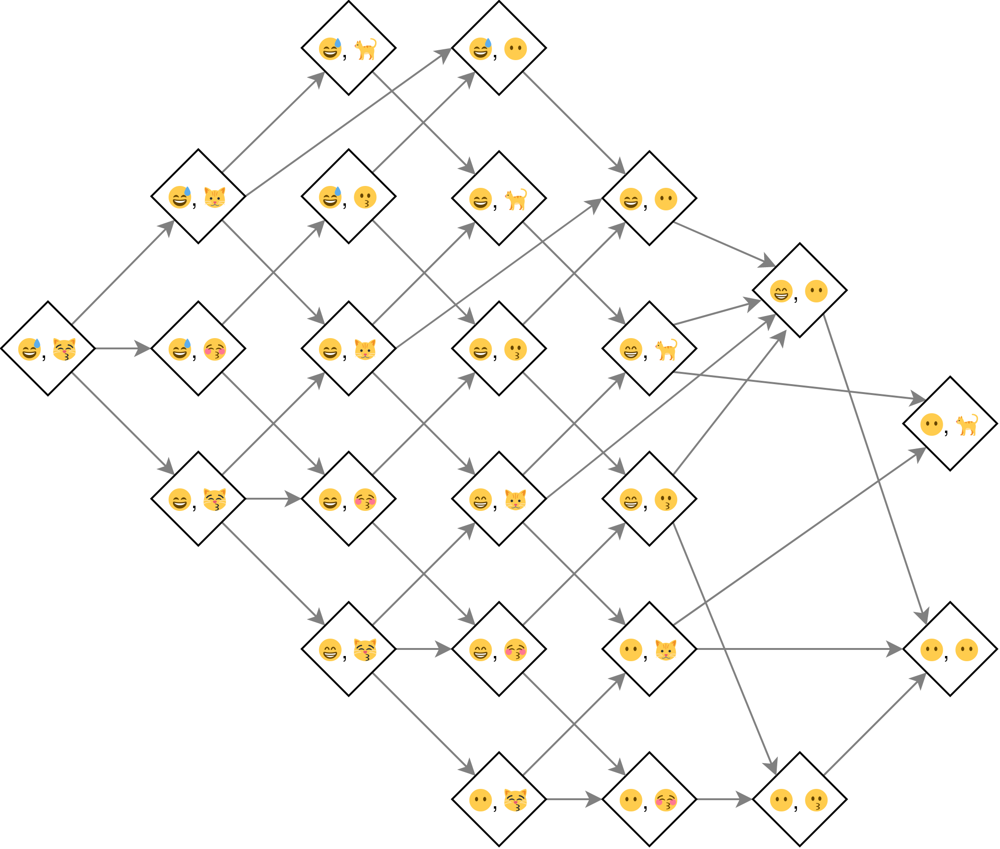
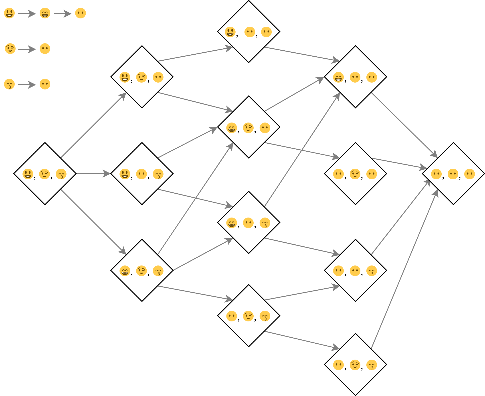

library(methods)15 - S4
Prerequisites
We load the {methods} package (R Core Team 2020) as it contains the S4 object-oriented programming system.
Basics
Q1: lubridate::period() returns an S4 class. What slots does it have? What class is each slot? What accessors does it provide?
A: Objects of the S4 Period class have six slots named year, month, day, hour, minute, and .Data (which contains the number of seconds). All slots are of type double. Most fields can be retrieved by an identically named accessor (e.g. lubridate::year() will return the field), use second() to get the .Data slot.
As a short example, we create a period of 1 second, 2 minutes, 3 hours, 4 days and 5 weeks.
example_12345 <- lubridate::period(
c(1, 2, 3, 4, 5),
c("second", "minute", "hour", "day", "week")
)This should add up to a period of 39 days, 3 hours, 2 minutes and 1 second.
example_12345
#> [1] "39d 3H 2M 1S"When we inspect example_12345, we see the fields and infer that the seconds are stored in the .Data field.
str(example_12345)
#> Formal class 'Period' [package "lubridate"] with 6 slots
#> ..@ .Data : num 1
#> ..@ year : num 0
#> ..@ month : num 0
#> ..@ day : num 39
#> ..@ hour : num 3
#> ..@ minute: num 2Q2: What other ways can you find help for a method? Read ?"?" and summarise the details.
A: Besides adding ? in front of a function call (i.e. ?method()), we may find:
- general documentation for a generic via
?genericName - general documentation for the methods of a generic via
methods?genericName - documentation for a specific method via
ClassName?methodName.
Classes
Q1: Extend the Person class with fields to match utils::person(). Think about what slots you will need, what class each slot should have, and what you’ll need to check in your validity method.
A: The Person class from Advanced R contains the slots name and age. The person class from the {utils} package contains the slots given (vector of given names), family, role, email and comment (see ?utils::person).
All slots from utils::person() besides role must be of type character and length 1. The entries in the role slot must match one of the following abbreviations “aut”, “com”, “cph”, “cre”, “ctb”, “ctr”, “dtc”, “fnd”, “rev”, “ths”, “trl”. Therefore, role might be of different length than the other slots and we’ll add a corresponding constraint within the validator.
# Definition of the Person class
setClass("Person",
slots = c(
age = "numeric",
given = "character",
family = "character",
role = "character",
email = "character",
comment = "character"
),
prototype = list(
age = NA_real_,
given = NA_character_,
family = NA_character_,
role = NA_character_,
email = NA_character_,
comment = NA_character_
)
)
# Helper to create instances of the Person class
Person <- function(given, family,
age = NA_real_,
role = NA_character_,
email = NA_character_,
comment = NA_character_) {
age <- as.double(age)
new("Person",
age = age,
given = given,
family = family,
role = role,
email = email,
comment = comment
)
}
# Validator to ensure that each slot is of length one
setValidity("Person", function(object) {
invalids <- c()
if (length(object@age) != 1 ||
length(object@given) != 1 ||
length(object@family) != 1 ||
length(object@email) != 1 ||
length(object@comment) != 1) {
invalids <- paste0(
"@name, @age, @given, @family, @email, ",
"@comment must be of length 1"
)
}
known_roles <- c(
NA_character_, "aut", "com", "cph", "cre", "ctb",
"ctr", "dtc", "fnd", "rev", "ths", "trl"
)
if (!all(object@role %in% known_roles)) {
paste(
"@role(s) must be one of",
paste(known_roles, collapse = ", ")
)
}
if (length(invalids)) {
return(invalids)
}
TRUE
})
#> Class "Person" [in ".GlobalEnv"]
#>
#> Slots:
#>
#> Name: age given family role email comment
#> Class: numeric character character character character characterQ2: What happens if you define a new S4 class that doesn’t have any slots? (Hint: read about virtual classes in ?setClass.)
A: It depends on the other arguments. If we inherit from another class, we get the same slots. But something interesting happens if we don’t inherit from an existing class. We get a virtual class. A virtual class can’t be instantiated:
setClass("Human")
new("Human")
#> Error in new("Human"): trying to generate an object from a virtual class ("Human")But can be inherited from:
setClass("Programmer", contains = "Human")Q3: Imagine you were going to reimplement factors, dates, and data frames in S4. Sketch out the setClass() calls that you would use to define the classes. Think about appropriate slots and prototype.
A: For all these classes we need one slot for the data and one slot per attribute. Keep in mind, that inheritance matters for ordered factors and dates. For data frames, special checks like equal lengths of the underlying list’s elements should be done within a validator.
For simplicity we don’t introduce an explicit subclass for ordered factors. Instead, we introduce ordered as a slot.
setClass("Factor",
slots = c(
data = "integer",
levels = "character",
ordered = "logical"
),
prototype = list(
data = integer(),
levels = character(),
ordered = FALSE
)
)
new("Factor", data = c(1L, 2L), levels = letters[1:3])
#> An object of class "Factor"
#> Slot "data":
#> [1] 1 2
#>
#> Slot "levels":
#> [1] "a" "b" "c"
#>
#> Slot "ordered":
#> [1] FALSEThe Date2 class stores its dates as integers, similarly to base R which uses doubles. Dates don’t have any other attributes.
setClass("Date2",
slots = list(
data = "integer"
),
prototype = list(
data = integer()
)
)
new("Date2", data = 1L)
#> An object of class "Date2"
#> Slot "data":
#> [1] 1Our DataFrame class consists of a list and a slot for row.names. Most of the logic (e.g. checking that all elements of the list are a vector, and that they all have the same length) would need to be part of a validator.
setClass("DataFrame",
slots = c(
data = "list",
row.names = "character"
),
prototype = list(
data = list(),
row.names = character(0)
)
)
new("DataFrame", data = list(a = 1, b = 2))
#> An object of class "DataFrame"
#> Slot "data":
#> $a
#> [1] 1
#>
#> $b
#> [1] 2
#>
#>
#> Slot "row.names":
#> character(0)Generics and methods
Q1: Add age() accessors for the Person class.
A: We implement the accessors via an age() generic, with a method for the Person class and a corresponding replacement function age<-:
setGeneric("age", function(x) standardGeneric("age"))
#> [1] "age"
setMethod("age", "Person", function(x) x@age)
setGeneric("age<-", function(x, value) standardGeneric("age<-"))
#> [1] "age<-"
setMethod("age<-", "Person", function(x, value) {
x@age <- value
validObject(x)
x
})Q2: In the definition of the generic, why is it necessary to repeat the name of the generic twice?
A: Within setGeneric() the name (1st argument) is needed as the name of the generic. Then, the name also explicitly incorporates method dispatch via standardGeneric() within the generic’s body (def parameter of setGeneric()). This behaviour is similar to UseMethod() in S3.
Q3: Why does the show() method defined in section 15.4.3 use is(object)[[1]]? (Hint: try printing the employee subclass.)
A: is(object) returns the class of the object. is(object) also contains the superclass, for subclasses like Employee. In order to always return the most specific class (the subclass), show() returns the first element of is(object).
Q4: What happens if you define a method with different argument names to the generic?
A: It depends. We first create the object hadley of class Person:
.Person <- setClass(
"Person",
slots = c(name = "character", age = "numeric")
)
hadley <- .Person(name = "Hadley")
hadley
#> An object of class "Person"
#> Slot "name":
#> [1] "Hadley"
#>
#> Slot "age":
#> numeric(0)Now let’s see which arguments can be supplied to the show() generic.
formals("show")
#> $objectUsually, we would use this argument when defining a new method.
setMethod("show", "Person", function(object) {
cat(object@name, "creates hard exercises")
})
hadley
#> Hadley creates hard exercisesWhen we supply another name as a first element of our method (e.g. x instead of object), this element will be matched to the correct object argument and we receive a warning. Our method will work, though:
setMethod("show", "Person", function(x) {
cat(x@name, "creates hard exercises")
})
#> Warning: For function 'show', signature 'Person': argument in method definition
#> changed from (x) to (object)
hadley
#> Hadley creates hard exercisesIf we add more arguments to our method than our generic can handle, we will get an error.
setMethod("show", "Person", function(x, y) {
cat(x@name, "is", x@age, "years old")
})
#> Error in conformMethod(signature, mnames, fnames, f, fdef, definition): in method for 'show' with signature 'object="Person"': formal arguments (object = "Person") omitted in the method definition cannot be in the signatureIf we do this with arguments added to the correctly written object argument, we will receive an informative error message. It states that we could add other argument names for generics, which can take the ... argument.
setMethod("show", "Person", function(object, y) {
cat(object@name, "is", object@age, "years old")
})
#> Error in rematchDefinition(definition, fdef, mnames, fnames, signature): methods can add arguments to the generic 'show' only if '...' is an argument to the genericMethod dispatch
Q1: Draw the method graph for f(😅, 😽).
A: Look at the graph and repeat after me: “I will keep my class structure simple and use multiple inheritance sparingly”.

Q2: Draw the method graph for f(😃, 😉, 😙).
A: We see that the method graph below looks simpler than the one above. Relatively speaking, multiple dispatch seems to introduce less complexity than multiple inheritance. Use it with care, though!

Q3: Take the last example which shows multiple dispatch over two classes that use multiple inheritance. What happens if you define a method for all terminal classes? Why does method dispatch not save us much work here?
A: We will introduce ambiguity, since one class has distance 2 to all terminal nodes and the other four have distance 1 to two terminal nodes each. To resolve this ambiguity we have to define five more methods, one per class combination.
S4 and S3
Q1: What would a full setOldClass() definition look like for an ordered factor (i.e. add slots and prototype to the definition above)?
A: The purpose of setOldClass() lies in registering an S3 class as a “formally defined class”, so that it can be used within the S4 object-oriented programming system. When using it, we may provide the argument S4Class, which will inherit the slots and their default values (prototype) to the registered class.
Let’s build an S4 OrderedFactor on top of the S3 factor in such a way.
setOldClass("factor") # use build-in definition for brevity
OrderedFactor <- setClass(
"OrderedFactor",
contains = "factor", # inherit from registered S3 class
slots = c(
levels = "character",
ordered = "logical" # add logical order slot
),
prototype = structure(
integer(),
levels = character(),
ordered = logical() # add default value
)
)We can now register the (S3) ordered-class, while providing an “S4 template”. We can also use the S4-class to create new object directly.
setOldClass("ordered", S4Class = "OrderedFactor")
x <- OrderedFactor(
c(1L, 2L, 2L),
levels = c("a", "b", "c"),
ordered = TRUE
)
str(x)
#> Formal class 'OrderedFactor' [package ".GlobalEnv"] with 4 slots
#> ..@ .Data : int [1:3] 1 2 2
#> ..@ levels : chr [1:3] "a" "b" "c"
#> ..@ ordered : logi TRUE
#> ..@ .S3Class: chr "factor"Q2: Define a length method for the Person class.
A: We keep things simple and will just return "180cm" when the length() method is called on a Person object. The method can be defined either as an S3 or S4 method.
length.Person <- function(x) "180cm" # S3
setMethod("length", "Person", function(x) "180cm") # S4References
R Core Team. 2020. R: A Language and Environment for Statistical Computing. Vienna, Austria: R Foundation for Statistical Computing. https://www.R-project.org/.